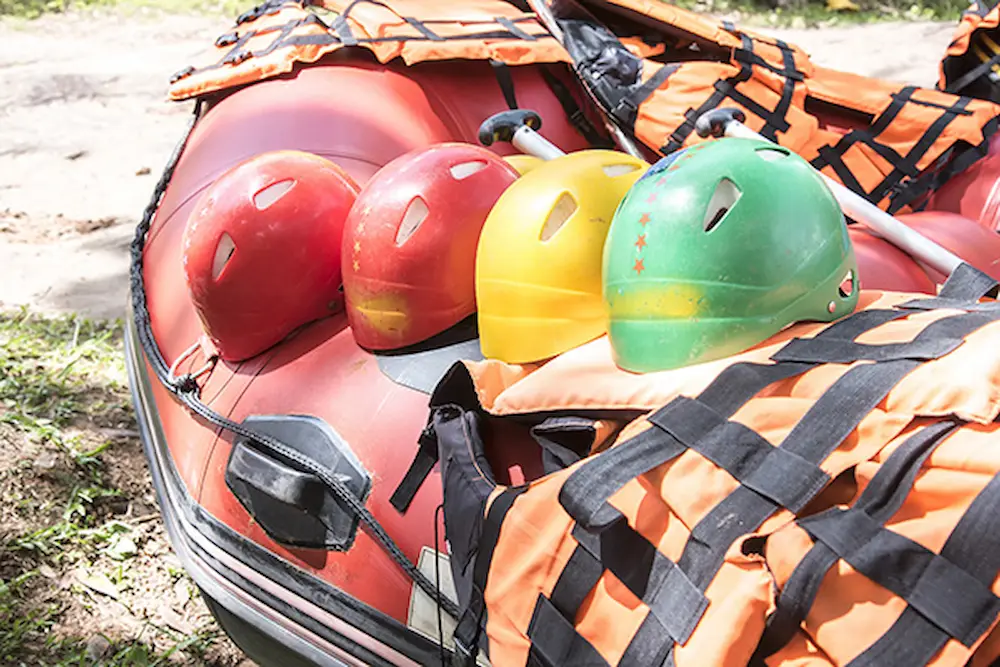
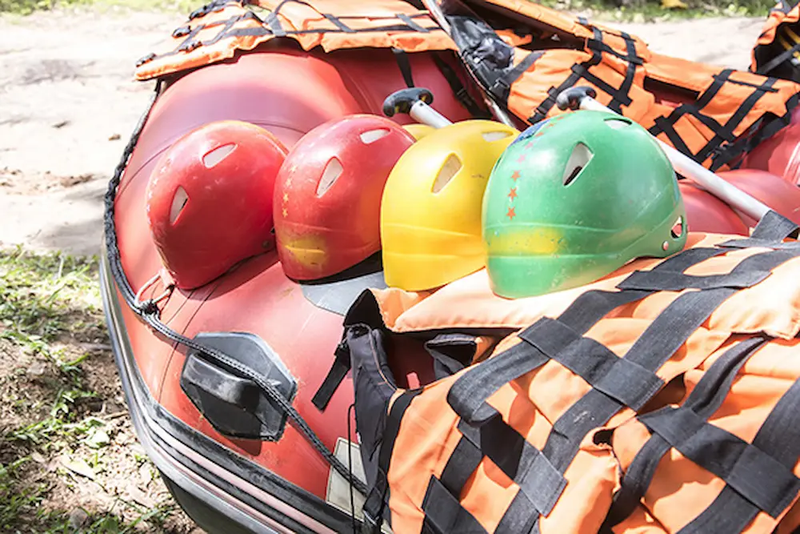

Dry Oar Whitewater Team
History
We are the Dry Oar Whitewater Team

After a trip through the U.S.A, our leader, Gabriel, enjoyed practicing this sport through the Colorado River. After returning to Brazil, he started offering it on the Monos River, São Paulo.
Adventures Awaits You!
 
